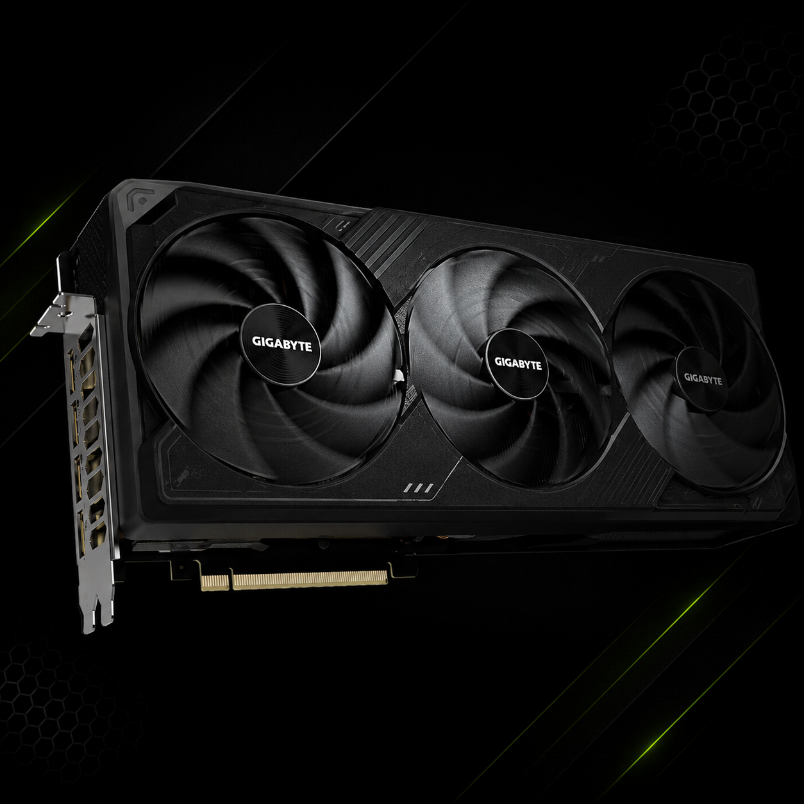

A placa de vídeo é um componente responsável pelo processamento das imagens exibidas na tela do computador. Ela realiza milhões de cálculos por segundo para gerar gráficos, vídeos, animações e efeitos visuais, aliviando o trabalho do processador principal (CPU). Atualmente, é um dos componentes mais importantes para quem utiliza o computador para jogos, edição de vídeo, modelagem 3D e inteligência artificial.
As placas de vídeo surgiram para atender à necessidade de exibir imagens nos primeiros computadores. No início, durante as décadas de 1970 e 1980, os computadores eram capazes de mostrar apenas textos e gráficos muito simples. Com o avanço da tecnologia e o crescimento dos jogos eletrônicos, tornou-se necessário criar um componente especializado no processamento de imagens.
Na década de 1990, as placas de vídeo começaram a evoluir rapidamente. Empresas como NVIDIA, ATI Technologies (atualmente AMD) e, mais tarde, Intel, passaram a desenvolver modelos cada vez mais potentes. Esses equipamentos deixaram de apenas exibir imagens e passaram a realizar milhões de cálculos por segundo para criar gráficos em 2D e 3D com alta qualidade.
Com o passar dos anos, as placas de vídeo se tornaram essenciais para diversas áreas, como jogos, edição de vídeos, modelagem em 3D, engenharia, medicina, pesquisa científica e inteligência artificial. Atualmente, elas são componentes indispensáveis para quem precisa de alto desempenho gráfico e processamento paralelo.
Nesta etapa, engenheiros desenvolvem o projeto da GPU (Graphics Processing Unit), definindo sua arquitetura, desempenho, consumo de energia e recursos que estarão presentes na placa de vídeo.
Após o projeto ser concluído, a GPU é fabricada utilizando silício em fábricas altamente tecnológicas. O processo exige equipamentos extremamente precisos e ambientes livres de poeira.
O chip gráfico é instalado na placa de circuito (PCB), juntamente com outros componentes importantes, como a memória VRAM, capacitores, conectores de energia e saídas de vídeo.
Antes de ser comercializada, cada placa passa por testes rigorosos para verificar desempenho, consumo de energia, estabilidade e funcionamento de todos os componentes.